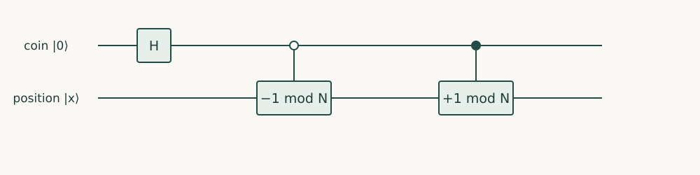

Quantum Algorithms · Chapter 6 · Draft lesson
Quantum Walks
How can graph structure organize useful interference?
Chapter direction
Starting point: Coherent control and reflections from Chapters 2 and 5; graph and spectral notions developed locally.
Anchor example: A reversible walk around a small cycle with a marked vertex.
This lesson includes explanations, worked examples, and problems with solutions. Advanced results whose proofs are outside the chapter are identified explicitly.
6.1 Discrete Walks
A walker on a graph can reach a vertex by several routes. A classical walk adds the probabilities of those routes. A quantum walk carries amplitudes and a reversible record of the direction, allowing some routes to cancel. The graph becomes part of the interference design.
6.1.1 Position and coin registers
On a cycle of N positions, use states \(\ket{c,x}\), with coin c=0 or 1. A shift sends \(\ket{0,x}\) to \(\ket{0,x-1\bmod N}\) and \(\ket{1,x}\) to \(\ket{1,x+1\bmod N}\). This is a permutation, hence reversible. A step is \(W=S(H\otimes I)\): rotate the coin, then shift. Starting at \(\ket{0,0}\), one step gives \((\ket{0,N-1}+\ket{1,1})/\sqrt2\). Measuring every step would destroy the coherence between subsequent routes and change the process.
6.1.2 Reflection-based walks
For a vertex v, prepare a normalized superposition \(\ket{p_v}\) of its outgoing directions. Reflecting about that state means \(2\ket{p_v}\bra{p_v}-I\), implementable by preparation, a zero-state reflection, and inverse preparation. Combining local reflections and a reversible edge swap defines another walk. The graph’s neighbor access, degree, and preparation costs must be specified; a graph supplied as an enormous table is not automatically available through a cheap coherent neighbor query. Products of reflections explain the connection to amplification, but useful phase gaps now depend on the graph.
Problem 6.1. Why must the coin remain in the state description?
Worked solution
Without it, two directed incoming states can be mapped to the same position state, which need not be reversible. The direction register supplies enough labels for the shift to be a permutation.

6.2 Continuous Walks
6.2.1 Evolution from graph connections
A continuous walk on two connected vertices has generator \(H=\gamma X\), a Hermitian matrix whose entries specify couplings. Define evolution \(U(t)=e^{-iHt}\) by its convergent power series. Since \(X^2=I\), even powers sum to cosine and odd powers to sine:
\[U(t)=\cos(\gamma t)I-i\sin(\gamma t)X,\quad U(t)\ket0=\cos(\gamma t)\ket0-i\sin(\gamma t)\ket1.\]
The transfer probability is \(\sin^2(\gamma t)\), reaching one at \(t=\pi/(2\gamma)\). For a larger undirected graph, a real symmetric adjacency matrix can play the role of H. The norm of H sets a time scale, so rescaling all couplings is not a free speedup.
6.2.2 Discrete and continuous access models
A discrete walk supplies a step operation; a continuous walk asks us to realize evolution for a time t. If the latter is simulated by gates, its construction and approximation error count. Neither elapsed physical time nor the number of abstract steps is interchangeable with elementary gate count. Fourier modes diagonalize translation on a cycle: each mode acquires a phase, linking walks to the frequency methods of Chapter 4.
Problem 6.2. At time \(t=\pi/(4\gamma)\), what is the two-vertex state?
Worked solution
It is \((\ket0-i\ket1)/\sqrt2\). Both positions have probability one half, but their relative phase controls later evolution.
6.3 Walk Algorithms
6.3.1 Marked-vertex search
Marking vertices can change a local coin or add a phase. Useful search requires an initial state, a marking operation, an evolution length, and a measurable success event. A marked vertex alone does not imply concentration there. For a four-cycle, the first two steps from \(\ket{0,0}\) give amplitudes \(\frac12(\ket{0,2}+\ket{1,0}+\ket{0,0}-\ket{1,2})\). At the third step the amplitudes at \(\ket{0,1}\) cancel while those at \(\ket{1,3}\) add. This is genuine path interference, but not yet a search algorithm. One must analyze how marking changes the relevant eigenphases and overlaps.
6.3.2 Element distinctness and backtracking
In element distinctness, vertices can represent subsets of input indices, and an edge replaces one index. Keep the queried values of the current subset; a collision makes that vertex marked. Updating a subset can reuse most stored values. Ambainis’s algorithm achieves \(O(N^{2/3})\) input queries with bounded error, using a subset size of order \(N^{2/3}\). This is a theorem, not a consequence proved by our four-cycle calculation. Quantum backtracking likewise walks over a search tree with coherent local tests; its benefits depend on tree size, depth, and the access implementation. The essential idea is to exploit reusable local structure rather than restart an unstructured search at every step.
Problem 6.3. Why does a walk query bound not specify a runtime?
Worked solution
A neighbor update can require arithmetic, memory access, state preparation, and workspace cleanup. The query model charges selected input accesses; a gate model must charge those additional operations.
Walks implement structured unitary transformations. To process matrices that are not unitary, we next represent them as part of a larger unitary.
Sources and further study: Ambainis, Quantum walk algorithm for element distinctness.